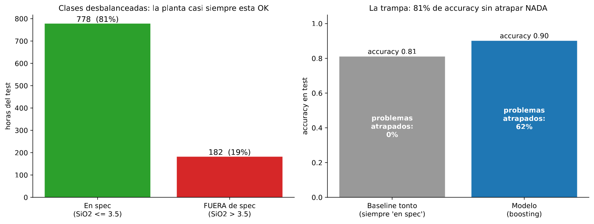
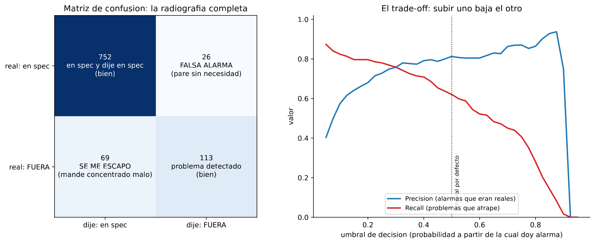

En 30 segundos
- 0,62 vs 0,77. El clasificador atrapa el 62 % de las horas fuera de especificación. Repetir el último análisis atrapa el 77 %.
- El 81 % de acierto es una trampa. Un modelo que diga "todo en spec" acierta 81 veces de cada 100 y no atrapa ni un problema.
- Precisión y exhaustividad se mueven en sentidos contrarios. El umbral decide cuál sacrificas, y es decisión de ingeniería, no del modelo.
- La matriz de confusión es el reporte, no el acierto. 113 atrapados, 26 falsas alarmas, 69 escapados.
- Aquí el proyecto se equivocó de rival. El apunte original comparó contra "siempre en spec". Contra la persistencia, el clasificador pierde.
Qué resuelve este módulo
Hasta aquí el proyecto ha predicho un número. Una planta rara vez quiere un número. Quiere un aviso: este lote va a salir fuera de especificación.
Eso es clasificación, la otra mitad del aprendizaje supervisado. Cambia el objetivo, cambian las métricas, y aparece una trampa que se lleva por delante a mucha gente: el acierto.
Y aparece la lección más cara del proyecto por segunda vez. El baseline correcto no es el que resulta cómodo.
Antes de la teoría: un ejemplo de juguete
Cien lotes de un turno. Veinte salieron fuera de especificación.
Paso 1. El modelo que no hace nada
Un modelo que dice "todos en spec", siempre.
acierta: los 80 lotes que sí estaban en spec
falla: los 20 que no
acierto = 80 / 100 = 0,8080 % de acierto sin atrapar ni un solo problema. Ese es el número que hay que desconfiar.
Paso 2. Un clasificador prudente
Ahora un modelo que avisa 15 veces. De esas 15 alarmas, 12 eran problemas reales y 3 eran falsas.
| Dijo "en spec" | Dijo "FUERA" | |
|---|---|---|
| Estaba en spec | 77 | 3 |
| Estaba FUERA | 8 | 12 |
Tres números salen de ahí:
acierto = (77 + 12) / 100 = 89 / 100 = 0,89
precisión = 12 / (12 + 3) = 12 / 15 = 0,80
exhaustividad = 12 / (12 + 8) = 12 / 20 = 0,60Precisión contesta: de las veces que di la alarma, cuántas eran de verdad. Exhaustividad contesta: de los problemas que hubo, cuántos atrapé.
Paso 3. Bajar el umbral para atrapar más
El mismo modelo, avisando en cuanto sospecha. Ahora da 30 alarmas: 18 reales y 12 falsas.
| Dijo "en spec" | Dijo "FUERA" | |
|---|---|---|
| Estaba en spec | 68 | 12 |
| Estaba FUERA | 2 | 18 |
acierto = (68 + 18) / 100 = 86 / 100 = 0,86
precisión = 18 / (18 + 12) = 18 / 30 = 0,60
exhaustividad = 18 / (18 + 2) = 18 / 20 = 0,90Paso 4. Comparar los dos umbrales
| Umbral | Acierto | Precisión | Exhaustividad | Se escapan |
|---|---|---|---|---|
| Prudente | 0,89 | 0,80 | 0,60 | 8 |
| Sensible | 0,86 | 0,60 | 0,90 | 2 |
El umbral sensible atrapa 6 problemas más y tiene menos acierto. Precisión y exhaustividad se intercambiaron casi exactamente, de 0,80 y 0,60 a 0,60 y 0,90.
Paso 5. Qué acaba de pasar
Ninguno de los dos umbrales es el correcto por sí mismo. Depende de qué cuesta más.
Si mandar un lote fuera de especificación cuesta un reproceso caro, se escogen los 2 escapados. Si cada falsa alarma para la planta media hora, se escogen las 3 falsas. Esa elección es del metalurgista, no del modelo.
Y el paso 1 deja el aviso de siempre. Un acierto de 0,80 puede significar cero problemas atrapados.
Glosario
13 términos, en palabras simples
- Clasificación. Predecir a qué categoría pertenece algo, en vez de predecir un número.
- Umbral de especificación. El valor a partir del cual el concentrado no cumple. Aquí, 3,5 % de SiO₂.
- Clase positiva. La que interesa detectar. Aquí, el lote fuera de especificación.
- Desbalance de clases. Que una categoría sea mucho más frecuente que la otra. Aquí, 81 contra 19.
- Matriz de confusión. La tabla de cuatro casillas con aciertos y errores de cada tipo.
- Verdadero positivo. Problema real que el modelo atrapó.
- Falso positivo. Alarma que no era nada. Falsa alarma.
- Falso negativo. Problema que se escapó.
- Acierto. Fracción de casos clasificados bien. Con clases desbalanceadas, engaña.
- Precisión. De las alarmas dadas, cuántas eran reales.
- Exhaustividad. De los problemas reales, cuántos se atraparon. En inglés, recall.
- F1. El promedio armónico de precisión y exhaustividad. Resume las dos en un número.
- Umbral de decisión. La probabilidad a partir de la cual el modelo da la alarma. Por defecto 0,5, y casi nunca es la mejor.
Paso a paso
Paso 1. Convertir el número en categoría
El objetivo pasa de ser la sílice a ser una respuesta de sí o no: por encima de 3,5 % es fuera de especificación.
El umbral no se inventa. 3,5 deja el 18 % de las horas fuera, que es un desbalance realista y cae cerca del percentil 82 de la distribución del módulo 1.
Paso 2. Usar las mismas variables del módulo 5
Las columnas de proceso más las cuatro de memoria. Cambia el objetivo y la métrica, no los datos.
Paso 3. Medir con la matriz, no con el acierto
Un solo número no puede describir dos tipos de error distintos. La matriz de confusión los separa.
Paso 4. Elegir el umbral como decisión de ingeniería
El modelo entrega una probabilidad. Convertirla en alarma es una decisión aparte, y depende del coste relativo de cada error.
Paso 5. Buscar el rival correcto
Antes de celebrar cualquier métrica hay que preguntarse contra qué se compara. "Siempre en spec" es un rival que no atrapa nada, así que superarlo demuestra poco.
El rival honesto es el mismo que en regresión: repetir el último análisis del laboratorio. Si la hora anterior estaba fuera de especificación, avisa.
El código, por partes
Paso 1. Construir la categoría y ver el desbalance
THRESHOLD = 3.5
y = (data[TARGET] > THRESHOLD).astype(int)
print(f"Horas fuera de spec -> train {y[is_train].mean():.1%} test {y[~is_train].mean():.1%}")línea por línea, 3 entradas
data[TARGET] > THRESHOLD- Compara toda la columna con el número y devuelve verdadero o falso por fila.
.astype(int)- Convierte verdadero en 1 y falso en 0, que es lo que espera el clasificador.
{...:.1%}- Formatea como porcentaje con un decimal. El 0.19 se imprime como 19.0%.
Umbral fuera-de-spec: 3.5 % SiO2
Horas fuera de spec -> train 17.2% test 19.0%
Paso 2. Entrenar el clasificador y sacar la matriz
from sklearn.ensemble import HistGradientBoostingClassifier
from sklearn.metrics import confusion_matrix, precision_score, recall_score
clf = HistGradientBoostingClassifier(random_state=0).fit(X_train, y_train)
print(confusion_matrix(y_test, clf.predict(X_test)))línea por línea, 3 entradas
HistGradientBoostingClassifier- El mismo boosting del módulo 5, en su versión para categorías.
confusion_matrix(real, predicho)- Devuelve las cuatro casillas en el orden [[TN, FP], [FN, TP]].
precision_score, recall_score- Calculan las dos métricas a partir de esas casillas.
Accuracy del baseline tonto (siempre 'en spec'): 0.810
Accuracy del modelo : 0.901
Matriz de confusion [[TN, FP], [FN, TP]]:
[[752 26]
[ 69 113]]
Precision: 0.813
Recall : 0.621
F1 : 0.704
Leído en palabras: hubo 182 horas fuera de especificación. El modelo atrapó 113, dejó escapar 69 y dio 26 falsas alarmas.
Paso 3. Poner el rival correcto enfrente
alarma_persistencia = (test["sil_lag1"] > THRESHOLD).astype(int)
print(confusion_matrix(y_test, alarma_persistencia))línea por línea, 1 entrada
test["sil_lag1"] > THRESHOLD- La regla entera del rival: si la hora anterior estaba fuera, avisa. Sin modelo y sin entrenar.
aviso acierto precisión atrapa falsas se escapan
siempre en spec 0.810 - 0 0 182
persistencia 0.912 0.769 140 42 42
clasificador 0.901 0.813 113 26 69El resultado, medido
Qué esperábamos. Que el clasificador ganara con claridad, porque el acierto sube de 0,810 a 0,901 y atrapa 113 problemas donde el baseline atrapaba cero.
Qué salió. Contra el rival correcto, el clasificador pierde.
| Aviso | Acierto | Precisión | Atrapa | Falsas alarmas | Se escapan |
|---|---|---|---|---|---|
| Siempre en spec | 0,810 | sin alarmas | 0 de 182 | 0 | 182 |
| Repetir el último análisis | 0,912 | 0,769 | 140 | 42 | 42 |
| Clasificador entrenado | 0,901 | 0,813 | 113 | 26 | 69 |
Qué significa. La persistencia atrapa 27 problemas más y da 16 falsas alarmas más. Y tiene mejor acierto, 0,912 contra 0,901.
Para decidir cuál conviene hace falta el coste de cada error. En una planta, mandar concentrado fuera de especificación suele costar bastante más que una comprobación de más. Con ese criterio, la regla sin modelo también gana aquí.
La corrección que el proyecto no había hecho
Este es el mismo error de baseline que el módulo 7 corrige para la regresión, y que en su día nadie aplicó a la clasificación.
El apunte original comparó el clasificador contra "siempre en spec" y lo dio por bueno. Ese rival no atrapa nada, así que superarlo es inevitable. Medido contra la persistencia, la ventaja desaparece.
La lección no es que la clasificación esté mal planteada. Es que un baseline cómodo convierte cualquier modelo en un éxito, y hay que elegirlo antes de ver el resultado.
Lo que este módulo deja abierto
El clasificador tiene una virtud que la tabla sí recoge: da menos falsas alarmas, 26 contra 42. Si el coste de parar la planta fuera muy alto, esa diferencia podría inclinar la balanza.
Falta saber de dónde saca el modelo sus avisos. Si se apoya casi entero en la sílice de la hora anterior, entonces está imitando a la persistencia con pasos de más. El módulo 7 lo mide con importancia por permutación y con SHAP.
Ojo
- El acierto con clases desbalanceadas no significa nada. Aquí 0,810 se consigue sin atrapar un solo problema.
- Precisión y exhaustividad no suben juntas. Bajar el umbral atrapa más y ensucia con falsas alarmas. Es un intercambio, no una mejora.
- El umbral por defecto es 0,5 y casi nunca es el correcto. Sale de una convención, no del coste de los errores de tu proceso.
- Elegir el umbral es decisión del proceso. El modelo entrega probabilidades. Quién paga el reproceso decide dónde cortar.
- Un baseline que no atrapa nada no es un baseline. Es un espantapájaros.
- La matriz de confusión se reporta entera. Un F1 suelto esconde si el problema son las falsas alarmas o los escapados.
Puente metalúrgico
Esto es exactamente un sistema de alarma de ley en la sala de control, y las dos métricas tienen nombre de planta.
La exhaustividad es cuántos lotes malos se te escapan al puerto. La precisión es cuántas veces paras la planta para nada. Ningún metalurgista necesita que le expliquen la diferencia, ni el intercambio entre las dos.
El umbral es dónde pones la consigna de la alarma. Ponerla muy ajustada dispara todo el turno y el operador acaba ignorándola, que es el peor resultado posible. Ponerla holgada deja pasar lotes malos.
Y la trampa del acierto es la carta de control que casi siempre dice que todo está bien. Una planta que cumple especificación el 81 % del tiempo hace que "no pasa nada" sea una predicción muy buena y completamente inútil. El valor está en las excepciones, no en la media.
Repaso
Un modelo acierta el 81 % de las veces. ¿Es bueno?
No se puede saber sin conocer el reparto de clases. Aquí el 81 % de las horas están en especificación, así que un modelo que diga siempre "en spec" acierta exactamente ese 81 % sin atrapar un solo problema.
Con clases desbalanceadas, el acierto mide sobre todo la clase mayoritaria. Hay que pedir la matriz de confusión entera, o al menos precisión y exhaustividad sobre la clase que importa. En este proyecto el modelo llega a 0,901 de acierto, y el número informativo es otro: atrapa 113 de 182 problemas.
Explica precisión y exhaustividad como se lo dirías a un jefe de planta.
Son las dos formas de equivocarse con una alarma, y no se pueden mejorar las dos a la vez.
La exhaustividad es cuántos lotes malos atrapas de todos los que hubo. Si es 0,62, se te escapan casi cuatro de cada diez. La precisión es cuántas de tus alarmas eran de verdad. Si es 0,81, una de cada cinco veces paras a comprobar para nada.
Bajar el umbral atrapa más lotes malos y multiplica las paradas inútiles. Subirlo hace lo contrario. Dónde poner ese umbral depende de qué cuesta más en tu planta.
El clasificador atrapa 113 problemas y el baseline atrapa 0. ¿Por qué no es una victoria?
Porque ese baseline es un espantapájaros. "Siempre en spec" no atrapa nada por construcción, así que superarlo no demuestra habilidad.
El rival honesto usa la información que la planta ya tiene: el último análisis del laboratorio. Con esa regla, sin entrenar nada, se atrapan 140 problemas de 182 y el acierto es 0,912, mejor que el 0,901 del modelo. La comparación correcta cambia el veredicto por completo. Es el mismo error que el módulo 7 destapa para la regresión, aplicado aquí.
La persistencia atrapa 140 y el modelo 113, pero el modelo da 26 falsas alarmas contra 42. ¿Cuál eliges?
Depende del coste de cada error, y esa es la respuesta correcta en una entrevista.
Si una falsa alarma cuesta media hora de planta parada, las 16 falsas alarmas de más de la persistencia cuestan ocho horas. Si un lote fuera de especificación cuesta un reproceso completo, los 27 problemas de más que atrapa la persistencia valen mucho más que eso. En metalurgia lo segundo suele pesar más, así que la regla sin modelo gana. Lo que no se puede es decidirlo mirando solo el acierto.
¿Qué habría que comprobar antes de descartar el clasificador del todo?
De dónde saca sus decisiones. Si su variable dominante es la sílice de la hora anterior, entonces está reproduciendo la persistencia con pasos de más, y no hay nada que rescatar.
Si en cambio se apoya también en variables de proceso, podría estar detectando algo que la persistencia no ve, aunque hoy lo haga peor en conjunto. Esa comprobación se hace con importancia por permutación y con SHAP, y es justo lo que mide el módulo 7.